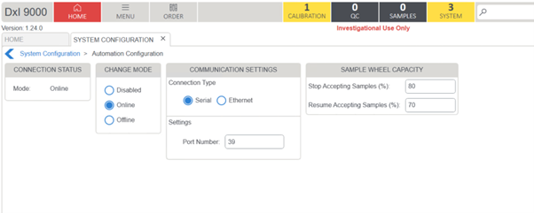
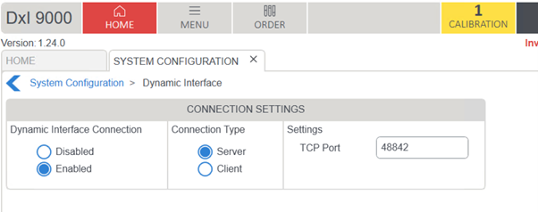
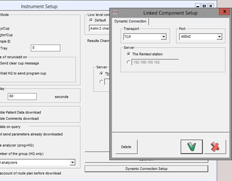
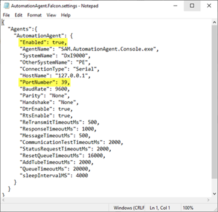
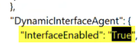
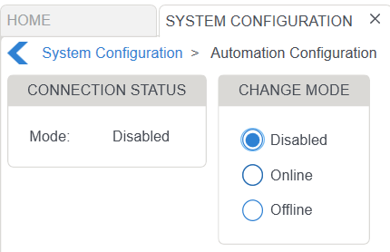

Enabling Automation using System Software Version 1.24 and Later
Perform this procedure to enable automation using system software version 1.24 and later.
In the Console App go to
MENU > System Configuration to open the System Configuration page.
Go to
External Interface Configuration > Automation to open the Automation Configuration page.

In the Change Mode pane select
Online.
In the Communication Settings pane, for the Connection Type select
Serial.
In the Port Number box type the port number.
Note: Port numbers will vary between instruments. See
Identifying the RS-232 Serial Port Number to identify the port number that corresponds to the physical port on the back of the instrument.
Adjust the values in the Sample Wheel Capacity pane, if necessary.
Tip: If the instrument will complete more than three tests, on average, per sample container, where some of the tests are two-step assays, adjust the values to lower levels to avoid overfilling the sample wheel, which may produce a high number of SWT flags.
Go to
System Configuration to open the System Configuration page.
Go to
External Interface Configuration > Dynamic Interface to open the Dynamic Interface page.

In the Connection Settings pane, for the Dynamic Interface Connection select
Enabled.
If connecting to Power Express
For the Connection Type select
Server.
For the Settings, in the TCP Port box type
48842.
If connecting to a DxA 5000
For the Connection Type select
Client.
Important: The communication is outbound. Therefore, on the Remisol PC, for the Dynamic Connection instrument driver for the DxI9000, you must select
Server.
For the Settings, in the TCP Port box type the port number as defined in Remisol.
Note: If you are configuring multiple DxI instruments, do not configure the instruments to use the same port numbers.

Go to
System Configuration to open the System Configuration page.
Select
Activate.
To test the connection
Important: The DxA DTS Module must be initialized and in a Running status.
Go to
MENU > Tools > Diagnostics > Nonintrusive Diagnostics > Automation Connection Test to open the Automation Connection Test page.
Select
Start Communication Test. The results of the test will be displayed in Results.
Align the system to the automation positions and calibrate the aliquot sample pipettor camera at the aspiration position. See
Aligning the System to Automation Positions for more information.
Enabling Automation using System Software Version 1.23 and Earlier
Perform this procedure to enable automation using system software version 1.23 and earlier.
Press the
Windows key and type
file explorer to open File Explorer.
Go to
C:\Program Files(x86)\DxI 9000\Settings\Falcon
Right-click the
AutomationAgent.Falcon.settings file and select
Edit in Notepad to open the file for editing.
Figure 96:

Modify the value for the "PortNumber" setting so that it matches the value for the port at the rear of the instrument.
Note: Ports will vary between instruments. To identify the port number that corresponds to the physical port at the back of the instrument, see
Identifying the RS-232 Serial Port Number.
Modify the value for "Enabled" to be
true.
Save and close the file.
Go to
C:\Program Files(x86)\DxI 9000\Settings
Right-click the
ICE.instrument.settings file and select
Edit in Notepad to open the file for editing.

Modify the value for "InterfaceEnabled" to be
true.
Take note of the value for "Port". You must provide this port number to the team that will configure the Dynamic Interface on Remisol.
Connect the Serial cable for the LAS to the port on the instrument that matches the "Port" value you took note of when you performed the
Identifying the RS-232 Serial Port Number procedure.
Connect the other end of the Serial cable to the DxA.
In the Console App go to
MENU > System Configuration to open the System Configuration window.
Go to
External Interface Configuration > Automation.
Figure 97:

In the Change Mode pane select
Online.
Go to
MENU > Tools > Diagnostics > Nonintrusive Diagnostics > Automation Communication Test to open the Automation Communication Test page.
Note: The DxA DTS Module must be initialized and in a Running status.
Select
Start Communication Test to test the connection. The result of the test will be displayed in the Result pane.
Note: In the event of communication errors, replace the Serial cable and try again.
Align the system to the automation positions and calibrate the aliquot sample pipettor camera at the aspiration position. See
Aligning the System to Automation Positions for more information.
Aligning the System to Automation Positions
Perform this procedure to align the system to the automation positions and to calibrate the aliquot sample pipettor camera at the aspiration position.